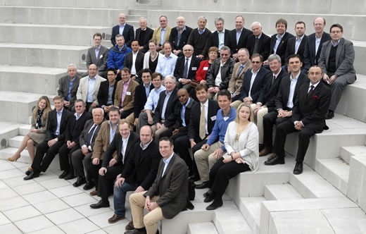
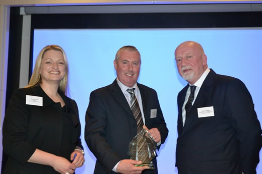
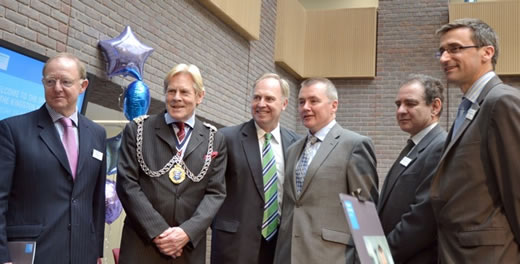

We are often asked to speak at external conferences around the world on a broad range of strategic management topics. We also organise regular Square Peg client conferences which are detailed below.
 Financial Services conference Financial Services conference
A thought-provoking evening forum co-hosted by Square Peg – 'How do you create and sustain successful partnerships in this rapidly-changing environment?' – London, May 2016.
Strategic Planning Society Working conference
Square Peg Managing Director Doug Ross presented on the theme of standards and accreditation at Strategic Planning Society's 12-13 March SPS Working Conference sponsored by Saïd Business School.
Focusing on the theme of 'Developing Strategy as a Profession', the event was attended by 60 delegates including senior strategy practitioners, academics, executives from other professions and strategists from the US Army Corps of Engineers. Delegates hailed from 15 nations, as far afield as Brazil, Qatar, Turkey, the USA and Australia. Square Peg was represented by Doug Ross, Phoebe Dunn and Charlotte Barrett-McGowan.
Discussions focused on the role of strategy in society and business, and on the evolution of strategy as a profession. Debate, group conversations and feedback built build on inputs and panel discussions of key themes led by SPS officers and members.
Ian McDonald-Wood, Chairman of the Strategic Planning Society said "It was a momentous occasion where strategy professionals from business and academia got together and discussed, often passionately the future direction of the SPS," he adds. "In many respects the event raised as many questions as it provided answers about the role the Society needs to play, so there is work still to do to bring some clarity to some of the key issues. But, there was universal agreement on the merits of professionalising strategy".
Below: Delegates from the working conference.

Strategic Planning Society Strategic Value in Corporate Reporting Awards
Square Peg are proud to have been one of the headline sponsors of the 6th Strategic Value in Corporate Reporting Awards, which took place on Monday 23rd April at The Royal Over-Seas League, London. The awards recognise the quality of strategy disclosure in the narrative of FTSE100 and FTSE250 companies' annual reporting.
The Strategic Planning Society confers these awards because it believes the effective use of narrative in corporate reporting, and particularly the part that strategy related commentary plays in it, is a long overdue evolution of how the world judges and values companies. The reporting framework now driven by statutory requirements creates a suitable basis for comparability between companies. How a company puts its strategic thinking, planning and management into words offers a way to assess relatively each listed company's future potential and its worth.
To select the winners, the SPS applies FutureValue's Strategic Value Analysis technique, with its individual comparative assessment of FTSE350 companies, as the rigorous, standard. Companies can only qualify for these awards by virtue of the quality of the narrative in their Annual Reports. Nomination for any of these Awards is neither possible or necessary.
As expected the event attracted a multitude of international businesses, and Square Peg International sponsored the Best Strategic Leadership Award which recognises the quality of leadership required to design, implement and report strategy effectively. Strategy is at the heart of everything we do at Square Peg, so the award itself is an apt reflection of our tagline "Strategy into Action".
Below: Square Peg Director, Phoebe Dunn awarding David Howie, Head of Brand at Rolls-Royce with the award for Best Strategic Leadership.

Kingston Business School Opening
Square Peg Managing Director and Chairman of the Faculty of Business and Law at Kingston University, Doug Ross at the opening of the Kingston Business School with the CEO of International Airlines Group (IAG), Willie Walsh – who opened the Business School on Monday 23rd April 2012.

Pictured (left to right):
- Sir Roderic Lyne, Deputy Chairman of the Royal Institute of International Affairs and Governor, Kingston University
- The Worshipful the Mayor of the Royal Borough of Kingston upon Thames, Councillor Patrick Codd
- Doug Ross, Chairman of the Faculty of Business and Law Advisory Board, Kingston University
- Willie Walsh, CEO, International Airlines Group (IAG)
- Julius Weinberg, Vice Chancellor, Kingston University
- Jean-Noel Ezingeard, Dean of the Faculty of Business and Law, Kingston University
 SPS Sponsorship - SPS Strategic Value in Corporate Reporting Awards 2010 SPS Sponsorship - SPS Strategic Value in Corporate Reporting Awards 2010
As long-standing members of the UK’s Strategic Planning Society (SPS) we sponsored the Best Overall Strategic Value Added by a FTSE250 Company award at the SPS Strategic Value in Corporate Reporting Awards 2010. The awards recognise best practice in strategy presentation through annual reports and were made at an event in central London on 28th April.
Read More about the SPS Awards
Managing High Velocity Change in M&As
Cardiff University
Doug Ross was invited to address the Cardiff University, Advanced Institute of Management on May 20th on the topic of 'Managing High Velocity Change in M&As'.
London Communicators and Engagement Network
We were delighted to have been invited to lead a session for the London Communicators and Engagement Network. Doug Ross spoke at the Aviva Tower on 9th March 2010 addressing the question: ‘In a world where all organisations are for sale - Are you ready to manage a merger, acquisition or joint venture’
Read More
Strategy into practice lecture series: 'Sex and Turkeys – Cultural Integration in M&As and JVs'
Kingston University Business School
In management's rush to 'do the deal', costly mistakes can surface long after final papers have been signed. With forethought common pitfalls can be avoided. Square Peg consultants addressed the Faculty of Business and Law at the University of Kingston in November using analogies of dating, sex, and gifts of turkeys to outline how a common sense approach must rein in any integration process. This highly entertaining presentation effectively conveyed the mechanical issues of integration and the related dynamics expected of any such change.
 "Culture management in mergers and Acquisitions" - download article here "Culture management in mergers and Acquisitions" - download article here
Growing Business Live
Central London
Doug Ross spoke at Growing Business Live, the year's leading event for UK entrepreneurs, on the topic of 'Organic growth' and more specifically, 'Diversified growth strategies'. The presentation looked at whether organic growth is the best option for all businesses and how you go about it, either by selling more existing products to the same or new markets, or by adding to your product range.
Square Peg Conference
Imperial War Museum, London
The new world demands a new view of strategic leadership - moving beyond planning
The findings of our survey, conducted among 937 senior HR professionals around the globe in partnership with Personnel Today, were launched on Wednesday 8th November at the Imperial War Museum in London. The presentation provoked a variety of reactions from our audience and the ensuing discussion was lively.
Our research focused on the interaction of strategic leadership, planning and the creation of value in times of change. 'Moving Beyond Planning' is the working title of our 2006 thought leadership research that we believe will significantly change the way executives look at their strategic leadership and planning process.
To reflect the multi-faceted nature of the research, instead of a single report, we are producing three interlinked pieces focusing on different aspects of the research, namely: planning, alignment and processes, together providing an in-depth view.
"Beyond Planning" - download an abbreviated version of the presentation here
The Finance Directors' Forum
Oriana, Southampton
Doug Ross was invited to address the Finance Directors' Forum aboard the Oriana. The title of his presentation was: 'Forget about numbers - get back to work!' and it discussed some of the following ideas and questions: When it comes to driving change, are FDs typically complacent? They often wait to be asked to "fix the problem" rather than designing their own destiny. Or they sell themselves short when their experience, expertise, and strategic insight could add significant value to strategic change. If money is a key influencer in change and finance leaders are key influencers of where money is invested, then why aren't finance leaders leading key aspects of a change implementation? And if the notion that leadership should align with strategy is compelling but operationally irrelevant, what is the most effective way for FDs to lead change?
"Forget About Numbers - Get Back to Work!" - download the presentation here
The HR Directors' Forum
Oriana, Southampton
Doug Ross presented at the HR Directors’ Forum organised by Richmond Events on ‘Beyond Planning – Strategic Leadership for the Real World’ and also moderated a lively workshop on the topic of Talent Management. He was supported by David Wells of Novartis, who outlined an exciting case study on Chiron Vaccines’s approach to high velocity change.
Some of the key ideas around moving beyond planning to a system that is focused on execution are summarised below – email info@squarepeg.com if you would like a copy of the presentation:
Develop and instill the organisation's DNA:
1. Paint the big picture – use scenario planning to set the stage and identify assumptions – tell the story of the future
2. Identify your 'Success Formula', make it explicit, and know when to review it
3. Provide the inspiration – instill values and branding to engage and gain commitment
Manage the operation as a dynamic, real time going concern:
4. Eliminate the annual planning and budgeting process
5. Invest rather than expense your resources
6. Use portfolio management to maximise investment effectiveness
7. Use disciplined project management to advance the organisation
Focus on capability development not just HR programmes:
8. Use battleship diagnostics and tactics to guide leadership development
9. Discard your annual HR processes and use rolling estimates to guide decisions
The IT Directors' Forum
Oriana, Southampton
Following a collaborative article and project work with Square Peg on the topic of ‘IT leaders and strategic change’, we were delighted to secure Tania Howarth, CIO Europe of The Coca-Cola Company, a speaking slot on the IT Directors’ Forum on the Oriana.
A synopsis of the Computer Weekly lead article can be found by clicking here.
Telecom Finance Conference
Central London
Doug Ross was invited to speak at the Telecom Finance conference on the topic of ‘Culture Management in Mergers and Acquisitions’.
"Culture management in mergers and Acquisitions" - download article here
Square Peg Conference
Tower of London
‘Stop Throwing Good Money after Bad. Breaking the Wasteful Leadership Development Spiral’ – we launched the results of our leadership development research and discussed the implications with guest speakers: Jim Mackay from Berkeley Consulting in Canada, Ed Hoskins, VPHR of Chiron Vaccines and Vivienne Hole from EuroNextLiffe.
"Stop Throwing Good Money after Bad" - download research report here
|